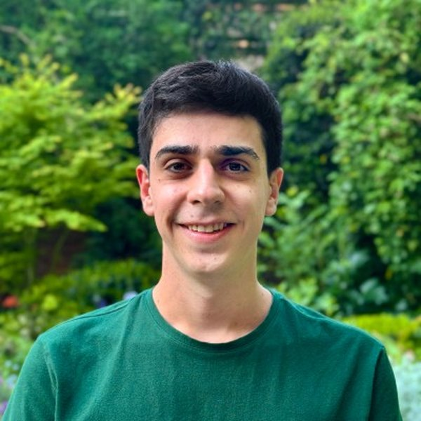
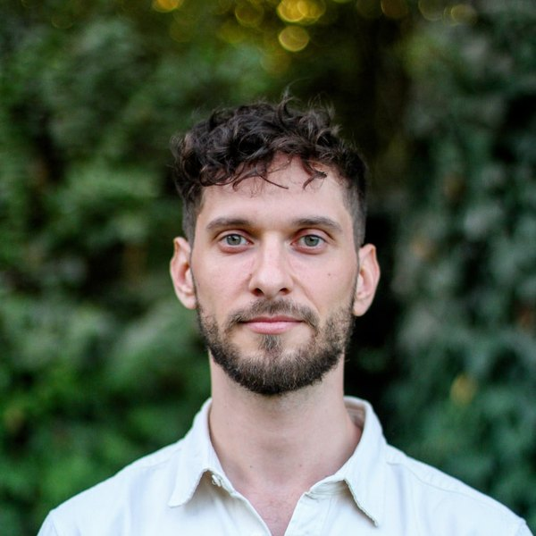
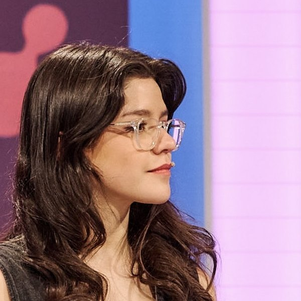
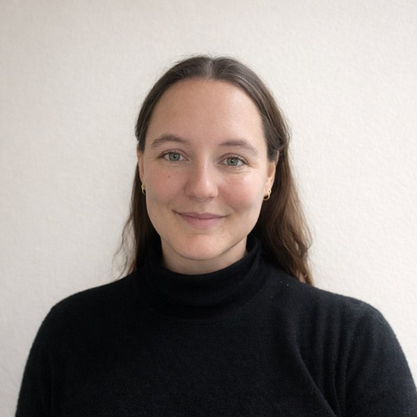
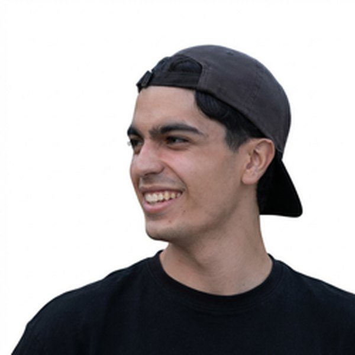
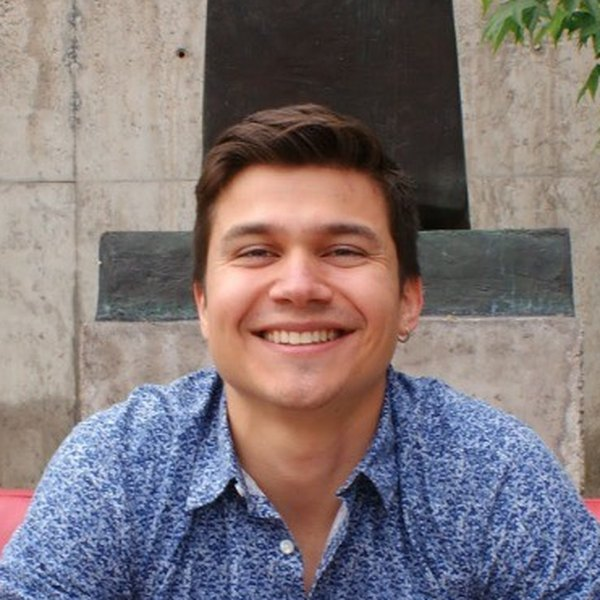
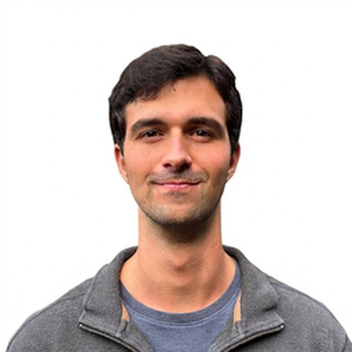
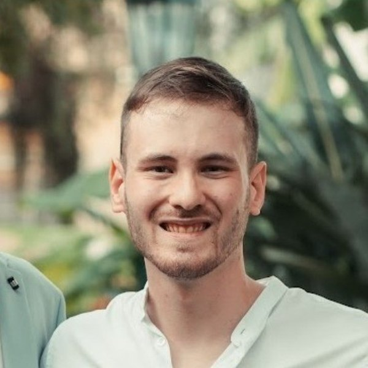

Founder & CEO, Kairos

Research Fellow, Anthropic
Founder, M3

Trinidad Matta
Contracting Comms, MIRI

Generalist, Kairos

Researcher, SPAR y CENIA

Lead, Quorum

Senior Events Associate, Quorum

Fellowships Lead, Apart Research
Product Engineer, 80,000 Hours